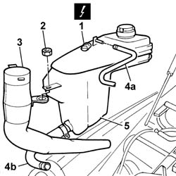

1088B10 Engine coolant SUPPLY RESERVOIR - R.R.
- Path
- Procedures > 10 ENGINE > 1088 ENGINE COOLING > 1088B ENGINE COOLANT RADIATOR AND RESERVOIR > 1088B10 Engine coolant SUPPLY RESERVOIR - R.R.
- Kind
- repair procedure (removal / refitting; the operation number is the code)
- Applies to
- engines: 2.4 JTD 20V; all production periods
- Interactive page
- https://sloeber94.github.io/elrnDB-lThss/en/#/850948
Applies to: engines: 2.4 JTD 20V; all production periods
 Removing
Removing
 Refitting
RefittingSee in Op. 1016A10 SOUND-PROOFING COVER - R.R.
See in Op. 7040D50 ENGINE COMPARTMENT UPPER SOUND INSULATION SHIELD - R.R.
1. Disconnect the electrical connection for the engine coolant level sensor.
 | Description | Connector |
|---|---|---|
1 | Engine coolant level sensor | K026 |
2. Undo the nut fixing the engine coolant reservoir and the screen washer fluid filler pipe.
3. Remove the windscreen washer fluid filler pipe.
- Position a suitable container for collecting the engine coolant.
4. Disconnect the flexible engine coolant recirculation pipes from the reservoir (4a) and the flexible pipe from the rigid pipe (4b).
5. Remove the engine coolant reservoir.

Applies to: engines: 2.4 JTD 20V; all production periods
Refitting
Removing- Connect the engine coolant pipes to the reservoir.
- Position the engine coolant reservoir in the special housing together with the screen washer fluid filler pipe.
- Tighten the engine coolant reservoir fixing nut.
- Connect the electrical connection for the engine coolant level sensor.
| Description | Connector |
|---|---|---|
. | Engine coolant level sensor | K026 |
See in Op. 1016A10 SOUND-PROOFING COVER - R.R.
See in Op. 7040D50 ENGINE COMPARTMENT UPPER SOUND INSULATION SHIELD - R.R.
See in Op. 0010T21 ENGINE COOLANT - Check density and top up if necessary
Topics linked from this page (3)
- 0010T21 ENGINE COOLANT - Check density and top up if necessary
- 1016A10 SOUND-PROOFING COVER - R.R.
- 7040D50 ENGINE COMPARTMENT UPPER SOUND INSULATION SHIELD - R.R.